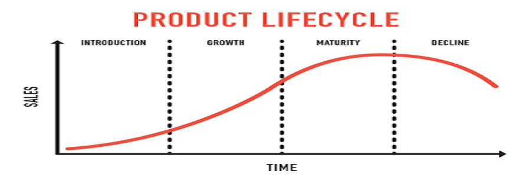

7.1 Product classification- CONSUMER GOOD:This product namely Nutella Hazelnut Spread is intended to be sold into commercial locations to normal publics as opposed to corporate customers.The product marketing efforts such as advertising to stimulate sales.
7.2 Product category- CONVENIENT GOOD:This product is made with an intention to be purchased frequently by the customers as it isintroduced with an intention to be used as a breakfast staple food.The objective is to get the benefit from a very large market as being a product in the category of food.
7.3 Product characteristics:
The duration of use of Hazelnut spread is around 10 months.The overall development cost of this product is around$2 million.Lifetime is around 12 months as from the month of manufacturing.The duration of use of this hazelnut spread when it comes to its opened jar, it easily lasts for at least a few months.

Fig6: Graph of Nutella Lifecycle